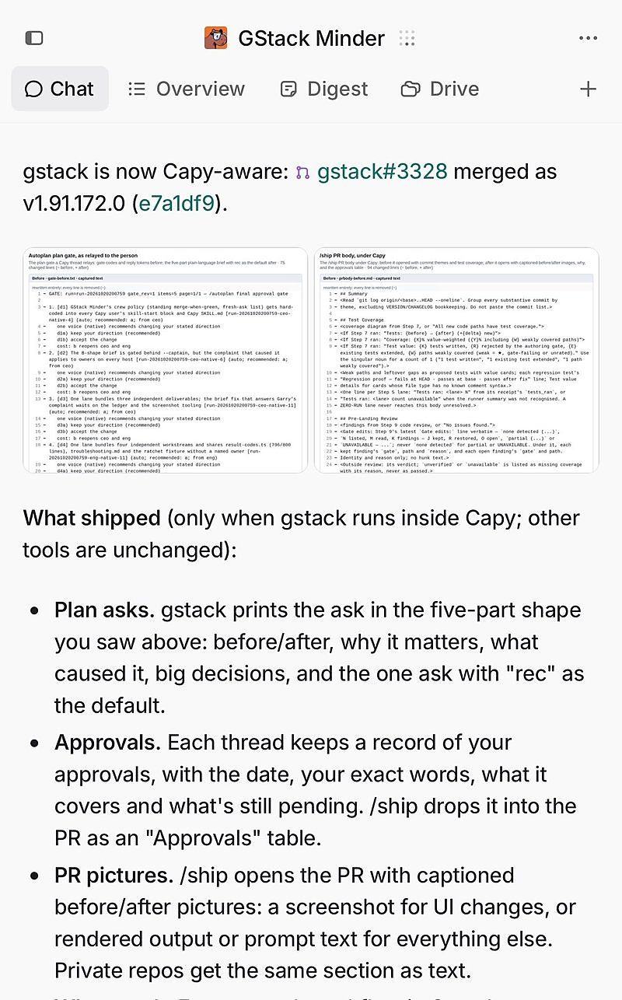

AI 日报 · 10月22日
AI 基础设施继续下沉：端侧语音、长时缓存与机器人数据
Gradium 开放 Phonon 端侧语音模型，OpenAI 文档加入 12 小时提示缓存选项；Sequoia 的机器人数据访谈提醒，物理 AI 仍依赖传感器、采集和质检。Builder 讨论开源语音、工具衔接与早期产品反馈。
端侧语音
提示缓存
机器人数据
产品反馈
5
Builder 动态
4
今日上榜项目
2
技术原文
1
公开视频
今日要点
Phonon 面向本地语音合成
Gradium 10 月 20 日开放 31m 与 40m 参数的模型及推理代码。31m 英语版采用 Apache 2.0 许可；40m 有单语及英、法、德、西、葡五语版本。厂商的延迟与质量数字来自其自测，不代表每台设备的实际表现。
长任务可复用稳定上下文
OpenAI 文档说明，GPT-5.6 及后续模型的 Responses API 可为共享前缀选择 12 小时最低缓存期，写入按未缓存输入价格的 2.5 倍计费；默认 30 分钟写入是 1.25 倍。是否划算取决于后续复用次数，12 小时也不是删除期限。
深度对话
Sequoia：机器人数据工厂怎样运转
Sequoia Capital 原频道访谈 Mecka 创始人 Josh Gao，讨论机器人训练数据的来源、传感器和质量控制。以下规模和配比是受访者观察及其公司的说法，不是行业统一标准。
机器人缺少互联网式的现成训练集
Gao 解释，第一人称人类动作视频可扩大覆盖范围，但仍需机器人动作数据和特定场景的遥操作示范。他描述的一种当前配比是约百万小时人类数据、数万小时机器人数据，再加少量场景内示范。
触觉需要新的采集硬件
仅有画面难以知道手握门把或物体时的施力；团队因此开发可采集力度的手套等设备，并与不同职业和企业合作收集动作。
质检是持续变化的运营工作
受访者举例说，公开 POV 视频曾被冒充为现场采集成果。团队因此需要不断调整规则、快速升级异常，并在采集现场核查，而不只是扩大数据量。
资讯精选
官方原文与今日线索
Gradium｜Phonon 的开放范围与设备支持
技术公告列出 31m、40m 与多语模型，以及 CPU、GPU、NPU 等运行路径。模型权重与推理代码分别从官方页面和仓库获取；部署前应核对具体模型许可。
OpenAI｜12 小时缓存的费用与边界
官方文档区分默认 30 分钟和可选 12 小时的最低缓存期，解释写入费率、重复读取与前缀稳定性的关系。更长缓存不自动保证低延迟或更低总费用。
Builder 动态
能力扩展后，成本和反馈仍要算清
Thibault Sottiaux｜缓存延长到 12 小时
OpenAI 的 Thibault 介绍 API 的 12 小时缓存，并称 Codex 与 Work 登录用户重访旧对话时也会保持缓存命中。API 部分可由官方文档核对；Codex 与 Work 的细节是他在原帖中的产品说明。
Matt Turck｜关注开源端侧语音
FirstMark 的 Matt Turck 指出小型开源、设备端文字转语音模型的进展。具体规格应以 Gradium 发布的 Phonon 技术公告和模型仓库为准。
Garry Tan｜GStack 接入 Capy
YC 的 Garry Tan 表示 GStack 已适配 Capy 的 Captains 软件工厂功能，并附上变更画面。这是项目集成进展，不构成性能或代码质量的独立评测。

Aditya Agarwal｜用分布式系统类比 Agent 群
SPC 合伙人 Aditya 将推理时扩展、子 Agent 和 Agent 群，与线程、多核及多节点系统作类比。这是帮助思考协调成本的观点，不是技术性能等价关系。
Zara Zhang｜早期受众首先提供信号
Zara Zhang 认为早期产品自有受众的主要价值是试验不同方向、找到首批用户并收集反馈，而不只是分发。这是产品方法判断，并无统一转化率数据。
GitHub Trending
今日榜单的四个项目


按 10 月 22 日 GitHub Trending 实时榜单筛选，避开近两期重点；星标、分叉与语言来自当次 GitHub API 快照，随后会变化。功能描述按仓库自述整理。
今日思考
今天的线索横跨设备端、API 和机器人现场：模型要进入产品，还要处理运行环境、重复计算、数据获取与质检。缓存期限、语音延迟和采集小时数都不能脱离计费、设备条件和数据质量单独比较。今日一问：如果你把同一 Agent 流程从云端搬到设备或长任务中，最先需要重新测量的是哪项成本与质量指标？
参考来源
Gradium｜Phonon 开源技术公告
Gradium｜Phonon 推理仓库
OpenAI｜提示缓存 API 文档
Sequoia｜Josh Gao 视频
Sequoia｜原节目与逐字稿
Thibault Sottiaux｜缓存动态
Matt Turck｜端侧语音
Garry Tan｜GStack 与 Capy
Aditya Agarwal｜Agent 群类比
Zara Zhang｜早期用户信号
GitHub｜10 月 22 日 Trending
vllm-project/vllm
DietrichGebert/ponytail
shiyu-coder/Kronos
Comfy-Org/ComfyUI